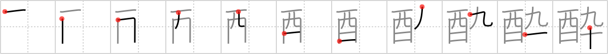

酔
← →
drunk

Reading:
On-Yomi: スイ — Kun-Yomi: よ.う、よ.い、よ
Heisig story:
Whiskey bottle . . . baseball . . . needle.
Koohii stories:
1) [dingomick] 2-9-2007(267): God you're drunk! How many whiskeys did you have? 9? 10?
2) [Filip] 7-2-2008(91): Whiskey with 90 percent alcohol will get you drunk. I don't care who you are.
3) [echeng25] 3-12-2008(29): As Ernest Hemingway said, it only takes one drink to get me drunk. But I'm not sure if it is the ninth or tenth drink that does it. [from dingomick].
4) [stehr] 25-10-2007(13): 99 bottles of beer on the wall, 99 bottles of beer, take one down, pass it around 98 bottles of beer on the wall, etc; getting drunk, just remembering the '90' part.
5) [Nukemarine] 8-10-2007(9): You will get DRUNK if you drink WHISKEY that is 90 proof (NINE and TEN).